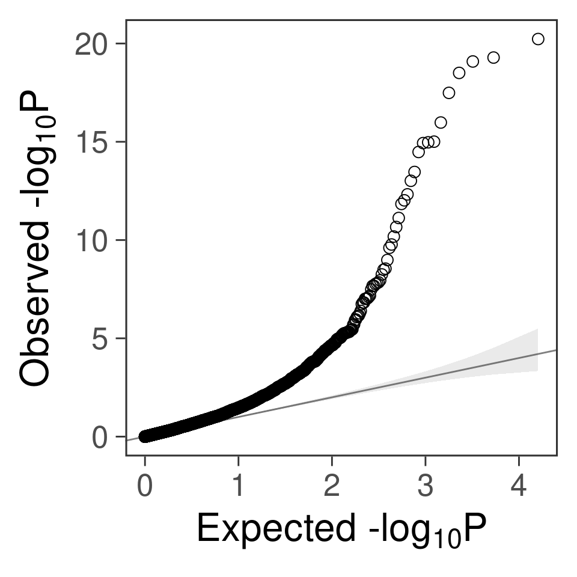
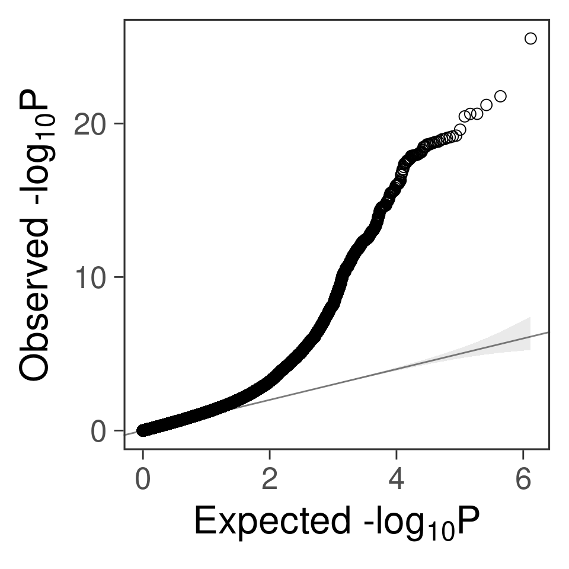
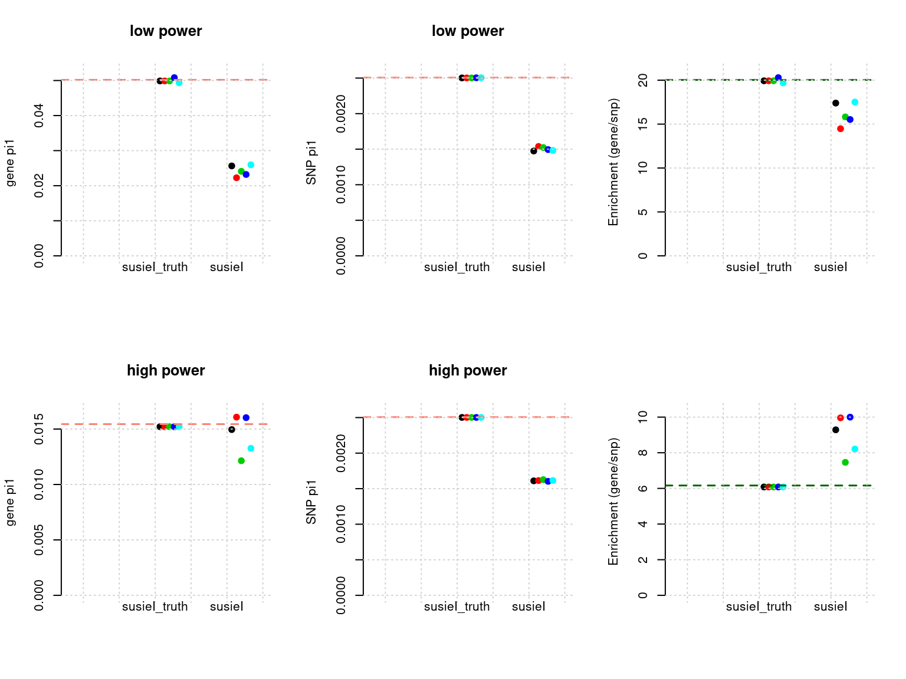

Test susieI using whole genome, s40.22 samples
Last updated: 2020-11-03
Checks: 5 2
Knit directory: causal-TWAS/
This reproducible R Markdown analysis was created with workflowr (version 1.6.2). The Checks tab describes the reproducibility checks that were applied when the results were created. The Past versions tab lists the development history.
The R Markdown file has unstaged changes. To know which version of the R Markdown file created these results, you’ll want to first commit it to the Git repo. If you’re still working on the analysis, you can ignore this warning. When you’re finished, you can run wflow_publish to commit the R Markdown file and build the HTML.
Great job! The global environment was empty. Objects defined in the global environment can affect the analysis in your R Markdown file in unknown ways. For reproduciblity it’s best to always run the code in an empty environment.
The command set.seed(20191103) was run prior to running the code in the R Markdown file. Setting a seed ensures that any results that rely on randomness, e.g. subsampling or permutations, are reproducible.
Great job! Recording the operating system, R version, and package versions is critical for reproducibility.
Nice! There were no cached chunks for this analysis, so you can be confident that you successfully produced the results during this run.
Using absolute paths to the files within your workflowr project makes it difficult for you and others to run your code on a different machine. Change the absolute path(s) below to the suggested relative path(s) to make your code more reproducible.
| absolute | relative |
|---|---|
| ~/causalTWAS/causal-TWAS/code/gwas.R | code/gwas.R |
| ~/causalTWAS/causal-TWAS/code/ld.R | code/ld.R |
| ~/causalTWAS/causal-TWAS/code/qqplot.R | code/qqplot.R |
Great! You are using Git for version control. Tracking code development and connecting the code version to the results is critical for reproducibility.
The results in this page were generated with repository version 547abc4. See the Past versions tab to see a history of the changes made to the R Markdown and HTML files.
Note that you need to be careful to ensure that all relevant files for the analysis have been committed to Git prior to generating the results (you can use wflow_publish or wflow_git_commit). workflowr only checks the R Markdown file, but you know if there are other scripts or data files that it depends on. Below is the status of the Git repository when the results were generated:
Ignored files:
Ignored: .Rhistory
Ignored: .Rproj.user/
Ignored: code/workflow/.ipynb_checkpoints/
Ignored: data/
Unstaged changes:
Modified: analysis/simulation-susieI-ukbWG-gtex.adipose_s40.22.Rmd
Modified: analysis/simulation-susieI-ukbWG-gtex.adipose_visual.Rmd
Modified: code/run_test_SERI.R
Modified: code/run_test_susieI.R
Modified: code/workflow/workflow-data.ipynb
Modified: code/workflow/workflow-susieI-20201001.ipynb
Note that any generated files, e.g. HTML, png, CSS, etc., are not included in this status report because it is ok for generated content to have uncommitted changes.
These are the previous versions of the repository in which changes were made to the R Markdown (analysis/simulation-susieI-ukbWG-gtex.adipose_s40.22.Rmd) and HTML (docs/simulation-susieI-ukbWG-gtex.adipose_s40.22.html) files. If you’ve configured a remote Git repository (see ?wflow_git_remote), click on the hyperlinks in the table below to view the files as they were in that past version.
| File | Version | Author | Date | Message |
|---|---|---|---|---|
| Rmd | f9c55de | simingz | 2020-10-30 | log bayes factor |
| html | f9c55de | simingz | 2020-10-30 | log bayes factor |
| Rmd | f7cd12a | simingz | 2020-10-24 | qqplot |
| html | f7cd12a | simingz | 2020-10-24 | qqplot |
| Rmd | ba58a99 | simingz | 2020-10-24 | qqplot |
| html | ba58a99 | simingz | 2020-10-24 | qqplot |
| Rmd | bf57f32 | simingz | 2020-10-24 | qqplot |
| html | bf57f32 | simingz | 2020-10-24 | qqplot |
| Rmd | 6526634 | simingz | 2020-10-23 | filtered samples s40.22 |
| html | 6526634 | simingz | 2020-10-23 | filtered samples s40.22 |
library(mr.ash.alpha)
library(data.table)
suppressMessages({library(plotly)})
library(tidyr)
library(plyr)
library(stringr)
source("analysis/summarize_twas_plots.R")Analysis description
n.ori <- 40000 # number of samples
n <- 22542
p <- 656321 # number of SNPs
J <- 8021 # number of genesThe genotype data we used is from UKB biobank, randomly selecting 40000 samples. We then filtered samples based on relatedness, ethics and other qc metrics, that ended up with n = 22542 samples. We use SNP genotype data from chr 1 to chr 22 combined from UKB. SNPs are downsampled to 1/10 (randomly), eQTLs (see below for definition of eQTL) were added back. This ends up with p = p as.charater(p) SNPs.
Our analysis consists of the following steps:
- Build expression predictors using another expression-genotype dataset.
The one we used in this analysis is GTEx Adipose tissue v7 dataset. This dataset contains ~ 380 samples. FUSION/TWAS were used to train expression model and we used their lasso results. SNPs included in eQTL anlaysis are restricted to cis-locus 500kb on either side of the gene boundary. eQTLs are defined as SNPs with abs(effectize) > 1e-8 in lasso results.
- Impute expression.
We impute gene expression for our genotype data using expression models obtained from step 1. There are 8021 genes with expression model. We imputed expression from genotypes using the expression predictors.
- Define and select regions
Next, the analysis is done at the “region” level, which is 500kb bins along the genome. We also used LDetect to define regions. We are exploring several ways to select regions that contain true signals, e.g. based on regional sum of mr.ash PIP for genes/SNPs, region smallest TWAS p value for gene/SNPs, or regional bayes factors, etc.
Run susie iteratively We then run susie for each of these regions. So the features of SuSiE are: SNPs and “genes” (not cis-eQTLs of that gene). We use the same prior for all SNPs and another prior for all “genes” when running SUSIE. In some settings, we also run SUSIE with null weight, which is calculated as
1- prior.SNP * n.SNP - prior.gene * n.gene. We obtain the PIP for SNPs and gene in the region. After we run susie for all regions (one iteration), we take the average of all SNP PIPs as the prior of SNPs for the next iteration and similarly for the prior for genes.We obtain PIP for genes from the last iteration as results.
simdatadir <- "~/causalTWAS/simulations/simulation_ashtest_20201001/"
outputdir <- "~/causalTWAS/simulations/simulation_susieI_20201001/"
susiedir <- "~/causalTWAS/simulations/simulation_susieI_20201001/"
simtag <- '20201001-1-3'
source('~/causalTWAS/causal-TWAS/code/gwas.R')
source('~/causalTWAS/causal-TWAS/code/ld.R')
source('~/causalTWAS/causal-TWAS/code/qqplot.R')exprgwasf <- paste0(simdatadir, simtag, ".exprgwas.txt.gz")
load(paste0(simdatadir, "simu_", simtag, "-pheno.Rd"))
caulist <- list()
for (chrom in 1:22) {
load(paste0("~/causalTWAS/ukbiobank/ukb_chr", chrom ,"_s40.22.FBM.Rd"))
load(paste0(simdatadir, "simu_s40000_GTEXadipose-B", chrom, "-cis-expr.Rd"))
caulist[[chrom]]<- c(exprres$gnames[phenores$batch[[chrom]]$param$idx.cgene], dat$snp[phenores$batch[[chrom]]$param$idx.cSNP,])
}
cau <- unlist(caulist)Power estimation
We use gene.pve ~ 0.1, snp.pve ~ 0.5.
- For SNPs, we use \(\pi_1 = 2.5e-3\), variance for effect size ~ \(0.03^2\), power at 5e-8 p value cutoff:
pow <- function(total, n, beta, cutp){
rec <- rep(0, total)
for (i in 1:total){
x <- rnorm(n)
y <- x * rnorm(1, sd = beta) + rnorm(n, sd = sqrt(2.5))
lm.s <- lm(y~x)
pv <- summary(lm.s)$coefficients[2,4]
rec[i] <- pv
}
length(rec[rec < cutp])/length(rec)
}total <- 1e3
n <- 22542
p1 <- pow(total, n, 0.0276, 5e-8)
print(p1)[1] 0.057- For genes, under low power setting, \(\pi_1 = 0.05\), variance for effect size ~ \(0.025^2\), power at 1e-5 cutoff:
p2 <- pow(total, n, 0.025, 1e-5)
print(p2)[1] 0.079For genes, under high power setting, \(\pi_1 = 0.02\), variance for effect size ~ \(0.045^2\), power at 1e-5 cutoff:
p3 <- pow(total, n, 0.045, 1e-5)
print(p3)[1] 0.317# save(p1,p2,p3, file = "data/power_s40.22.Rd")p value distribution
- TWAS p value of genes:
chrom <- 1
a <- read.table(exprgwasf, header = T)
a$ifcausal <- ifelse(a$MARKER_ID %in% cau, 1, 0)
ax <- pretty(0:max(-log10(a$PVALUE)), n = 30)
par(mfrow=c(3,1))
h1 <- hist(-log10(a$PVALUE), breaks = 100, xlab = "-log10(p)", main = "P value distribution-all", col = "grey", xlim= c(3,20), ylim =c(0,50)); grid()
h2 <- hist(-log10(a[a$ifcausal == 1, ]$PVALUE), breaks = h1$breaks, xlab = "-log10(p)", main = "P value distribution-causal", col = "salmon", xlim= c(3,20), ylim =c(0,50));grid()
cat("number of genes p < 1e-5:", nrow(a[a$PVALUE < 1e-5,]))number of genes p < 1e-5: 67cat("number of causal genes p < 1e-5:", nrow(a[a$PVALUE < 1e-5 & a$ifcausal ==1 ,]))number of causal genes p < 1e-5: 33plot(a[a$X.CHROM ==chrom, ]$BEGIN, -log10(a[a$X.CHROM ==chrom, ]$PVALUE), col = a[a$X.CHROM ==chrom, ]$ifcausal + 1, xlab = paste0("chr", chrom), ylab = "-log10(pvalue)")
points(a[a$X.CHROM ==chrom & a$ifcausal ==1, ]$BEGIN, -log10(a[a$X.CHROM ==chrom & a$ifcausal ==1, ]$PVALUE), col = "red", pch =19)
grid()
- qq plot for genes
gg_qqplot(a$PVALUE) +
theme_bw(base_size = 24) +
theme(
axis.ticks = element_line(size = 0.5),
panel.grid = element_blank()
# panel.grid = element_line(size = 0.5, color = "grey80")
)
- p value of SNPs (GWAS):
snpgwasf <- paste0(simdatadir, simtag, ".snpgwas.txt.gz")
b <- fread(snpgwasf, header = T)
b$ifcausal <- ifelse(b$MARKER_ID %in% cau, 1, 0)
ax <- pretty(0:max(-log10(b$PVALUE)), n = 30)
par(mfrow=c(3,1))
h1 <- hist(-log10(b$PVALUE), breaks = 100, xlab = "-log10(p)", main = "P value distribution-all", col = "grey", xlim= c(3,20), ylim =c(0,100)); grid()
h2 <- hist(-log10(b[b$ifcausal == 1, ]$PVALUE), breaks = h1$breaks, xlab = "-log10(p)", main = "P value distribution-causal", col = "salmon", xlim= c(3,20), ylim =c(0,100));grid()
cat("number of SNPs < 5e-8: ", nrow(b[b$PVALUE < 5e-8,]))number of SNPs < 5e-8: 876plot(b[b$X.CHROM ==chrom, ]$BEGIN, -log10(b[b$X.CHROM ==chrom, ]$PVALUE), col = b[b$X.CHROM ==chrom,]$ifcausal + 1, xlab = paste0("chr", chrom), ylab = "-log10(pvalue)")
points(b[b$X.CHROM ==chrom & b$ifcausal ==1, ]$BEGIN, -log10(b[b$X.CHROM ==chrom & b$ifcausal ==1, ]$PVALUE), col = "red", pch =19)
grid()
- qq plot for SNPs
gg_qqplot(b$PVALUE) +
theme_bw(base_size = 24) +
theme(
axis.ticks = element_line(size = 0.5),
panel.grid = element_blank()
# panel.grid = element_line(size = 0.5, color = "grey80")
)
Parameter estimation results
Results: Each row shows parameter estimation results from 5 simulation runs with similar settings (i.e. pi1 and PVE for genes and SNPs). each row has two plots, one for gene pi1 estimation, one for enrichment (gene pi1/snp pi1). Results from each run were represented by one dot, dots with the same color come from the same run. horizontal dash lines: simulation truth, susietruth, the truth in selected regions that were used to run susie iteractively (susieI).
show_param <- function(phenofs, susieIfs, susieIfs2){
pars <- do.call(rbind, lapply(phenofs, function(x) {load(x);
c(phenores$param$pve.gene.truth,
phenores$param$pve.snp.truth,
length(phenores$batch[[1]]$param$idx.cgene)/phenores$batch[[1]]$param$J,
length(phenores$batch[[1]]$param$idx.cSNP)/phenores$batch[[1]]$param$M)}))
colnames(pars) <- c("PVE.gene_truth", "PVE.SNP_truth", "pi1.gene_truth", "pi1.SNP_truth")
param.s <- do.call(rbind, lapply(susieIfs, function(x) {load(x); c(tail(prior.gene_rec[prior.gene_rec!=0], 1), tail(prior.SNP_rec[prior.SNP_rec!=0],1))}))
param.s.truth <- do.call(rbind, lapply(susieIfs2, function(x) {
a <- fread(x, header = T);
c(nrow(a[a$ifcausal == 1 & a$type == "gene" ])/ nrow(a[a$type == "gene"]),
nrow(a[a$ifcausal == 1 & a$type == "SNP"])/ nrow(a[a$type == "SNP"]))
}))
pars.s <- cbind(param.s.truth, param.s)[, c(1,3,2,4)]
colnames(pars.s) <- paste(rep(c("pi1.gene_", "pi1.SNP_"), each = 2), c("susietruth", "susieI"), sep = "")
df <- cbind(tags, format(pars, digits = 4), format(pars.s, digits =4))
rownames(df) <- NULL
return(df)
# df %>%
# kable("html", escape = F) %>%
# kable_styling("striped", full_width = F) %>%
# row_spec(c(1:5, 11:15), background = "#FEF3B9") %>%
# scroll_box(width = "100%", height = "600px", fixed_thead = T)
}
plot_param <- function(df, ...){
df <- apply(df[ , 2:ncol(df)], 2, function(x) as.numeric(x))
st <- cbind(df[,"pi1.gene_susietruth"], 1:nrow(df), 2 + 1:nrow(df)/nrow(df)/3)
s <- cbind(df[,"pi1.gene_susieI"], 1:nrow(df), 3 + 1:nrow(df)/nrow(df)/3)
t <- df[1,"pi1.gene_truth"]
dfp <- rbind(st,s)
plot(dfp[,3], dfp[,1], col = dfp[,2], pch = 19, ylab = "gene pi1", xaxt = "n", xlab="", xlim = c(0.8, 3.5), frame.plot=FALSE, ylim = c(0, max(dfp[,1],t) *1.05), ...)
axis(side=1, at=1:2, labels = FALSE, tick = F)
text(x=2:3, 0, labels = c( "susieI_truth", "susieI"), xpd = T, pos =1)
abline(h=t, lty = 2, col= "salmon", lwd=1.5)
grid()
st <- cbind(df[,"pi1.gene_susietruth"]/df[,"pi1.SNP_susietruth"], 1:nrow(df), 2 + 1:nrow(df)/nrow(df)/3)
s <- cbind(df[,"pi1.gene_susieI"]/df[,"pi1.SNP_susieI"], 1:nrow(df), 3 + 1:nrow(df)/nrow(df)/3)
t <- df[1,"pi1.gene_truth"]/df[1,"pi1.SNP_truth"]
dfp <- rbind(st,s)
plot(dfp[,3], dfp[,1], col = dfp[,2], pch = 19, ylab = "Enrichment (gene/snp)", xaxt = "n", xlab="", xlim = c(0.8, 3.5),frame.plot=FALSE, ylim = c(0, min(max(dfp[,1],t) *1.05, 150)))
axis(side=1, at=1:2, labels = FALSE, tick = F)
text(x=2:3, 0, labels = c("susieI_truth", "susieI"), xpd = T, pos =1)
abline(h= t, lty = 2, col= "darkgreen", lwd=1.5)
grid()
}
gpip_dist <- function(susiefs, ...){
dflist <- list()
for (f in susiefs){
dflist[[f]] <- read.table(f, header =T , stringsAsFactors = F)
}
df <- do.call(rbind, dflist)
hist(df[df$type == "gene", "susie_pip"], xlab = "gene susie PIP",
breaks = 50, ylim = c(0,20), xlim=c(0,1), col = "salmon", ...)
}susieI
- Regions: all regions, 500kb uniform regions.
- Susie run parameters:
L=1. We initialize with prior for genes and SNPs as uniform. gene.pve ~ 0.1, snp.pve ~ 0.5. Null weight is calculated based on prior of genes and SNPs ( 1 - sum of priors for snps and genes). Prior variance and residual variance were calculated by SUSIE for each region.
tags <- paste(rep(1:2, each = 5), 1:5, sep = "-")
phenofs <- paste0(simdatadir, "simu_20201001-", tags, "-pheno.Rd")
susieIfs <- paste0(outputdir, "20201001-", tags, ".config1.susieIres.Rd")
susieIfs2 <- paste0(outputdir, "20201001-", tags, ".config1.susieI.txt")
df <- show_param(phenofs, susieIfs, susieIfs2)
par(mfrow = c(2,2))
plot_param(df[1:5,], main = "low power")
plot_param(df[6:10,], main = "high power")Single effect model/EM (1)
- Regions: all regions, 500kb uniform regions.
- Run parameters: We initialize with prior for genes and SNPs as uniform. gene.pve ~ 0.1, snp.pve ~ 0.5. Null weight is calculated based on prior of genes and SNPs ( 1 - sum of priors for snps and genes). We use the true prior variance for genes and SNPs.
tags <- paste(rep(1:2, each = 5), 1:5, sep = "-")
phenofs <- paste0(simdatadir, "simu_20201001-", tags, "-pheno.Rd")
susieIfs <- paste0(outputdir, "20201001-", tags, ".config1.SERIres.Rd")
susieIfs2 <- paste0(outputdir, "20201001-", tags, ".config1.SERI.txt")
df <- show_param(phenofs, susieIfs, susieIfs2)
par(mfrow = c(2,2))
plot_param(df[1:5,], main = "low power")
plot_param(df[6:10,], main = "high power")
Single effect model/EM (2)
- Regions: all regions, defined based on LDetect.
- Run parameters: We initialize with prior for genes and SNPs as uniform. gene.pve ~ 0.1, snp.pve ~ 0.5. Null weight is calculated based on prior of genes and SNPs ( 1 - sum of priors for snps and genes). We use the true prior variance for genes and SNPs.
tags <- paste(rep(1:2, each = 5), 1:5, sep = "-")
phenofs <- paste0(simdatadir, "simu_20201001-", tags, "-pheno.Rd")
susieIfs <- paste0(outputdir, "20201001-", tags, ".config6.SERIres.Rd")
susieIfs2 <- paste0(outputdir, "20201001-", tags, ".config6.SERI.txt")
df <- show_param(phenofs, susieIfs, susieIfs2)Avoidable 2.828 seconds. This file is very unusual: it ends abruptly without a final newline, and also its size is a multiple of 4096 bytes. Please properly end the last row with a newline using for example 'echo >> file' to avoid this time to copy.
Avoidable 4.255 seconds. This file is very unusual: it ends abruptly without a final newline, and also its size is a multiple of 4096 bytes. Please properly end the last row with a newline using for example 'echo >> file' to avoid this time to copy.par(mfrow = c(2,2))
plot_param(df[1:5,], main = "low power")
plot_param(df[6:10,], main = "high power")
Single effect model/EM (3)
- Regions: regions with at most 1 causal signal, regions are defined based on LDetect.
- Run parameters: We initialize with prior for genes and SNPs as uniform. gene.pve ~ 0.1, snp.pve ~ 0.5. Null weight is calculated based on prior of genes and SNPs ( 1 - sum of priors for snps and genes). We use the true prior variance for genes and SNPs.
tags <- paste(rep(1:2, each = 5), 1:5, sep = "-")
phenofs <- paste0(simdatadir, "simu_20201001-", tags, "-pheno.Rd")
susieIfs <- paste0(outputdir, "20201001-", tags, ".config7.SERIres.Rd")
susieIfs2 <- paste0(outputdir, "20201001-", tags, ".config7.SERI.txt")
df <- show_param(phenofs, susieIfs, susieIfs2)
par(mfrow = c(2,2))
plot_param(df[1:5,], main = "low power")
plot_param(df[6:10,], main = "high power")
sessionInfo()R version 3.6.1 (2019-07-05)
Platform: x86_64-pc-linux-gnu (64-bit)
Running under: Scientific Linux 7.4 (Nitrogen)
Matrix products: default
BLAS/LAPACK: /software/openblas-0.2.19-el7-x86_64/lib/libopenblas_haswellp-r0.2.19.so
locale:
[1] LC_CTYPE=en_US.UTF-8 LC_NUMERIC=C
[3] LC_TIME=en_US.UTF-8 LC_COLLATE=en_US.UTF-8
[5] LC_MONETARY=en_US.UTF-8 LC_MESSAGES=en_US.UTF-8
[7] LC_PAPER=en_US.UTF-8 LC_NAME=C
[9] LC_ADDRESS=C LC_TELEPHONE=C
[11] LC_MEASUREMENT=en_US.UTF-8 LC_IDENTIFICATION=C
attached base packages:
[1] parallel stats graphics grDevices utils datasets methods
[8] base
other attached packages:
[1] snpStats_1.34.0 Matrix_1.2-18 survival_2.44-1.1
[4] doParallel_1.0.14 iterators_1.0.10 foreach_1.4.4
[7] stringr_1.4.0 plyr_1.8.4 tidyr_1.1.0
[10] plotly_4.9.0 ggplot2_3.2.1 data.table_1.13.2
[13] mr.ash.alpha_0.1-34
loaded via a namespace (and not attached):
[1] tidyselect_1.1.0 xfun_0.8 purrr_0.3.4
[4] splines_3.6.1 lattice_0.20-38 colorspace_1.4-1
[7] vctrs_0.3.1 htmltools_0.3.6 viridisLite_0.3.0
[10] yaml_2.2.0 rlang_0.4.6 R.oo_1.22.0
[13] later_0.8.0 pillar_1.4.2 R.utils_2.9.0
[16] glue_1.3.1 withr_2.1.2 BiocGenerics_0.30.0
[19] lifecycle_0.1.0 zlibbioc_1.30.0 munsell_0.5.0
[22] gtable_0.3.0 workflowr_1.6.2 R.methodsS3_1.7.1
[25] htmlwidgets_1.3 codetools_0.2-16 evaluate_0.14
[28] labeling_0.3 knitr_1.23 httpuv_1.5.1
[31] highr_0.8 Rcpp_1.0.5 promises_1.0.1
[34] scales_1.1.0 backports_1.1.4 jsonlite_1.6
[37] farver_2.0.1 fs_1.3.1 digest_0.6.20
[40] stringi_1.4.3 dplyr_0.8.3 cowplot_1.0.0
[43] grid_3.6.1 rprojroot_1.3-2 tools_3.6.1
[46] magrittr_1.5 lazyeval_0.2.2 tibble_2.1.3
[49] crayon_1.3.4 whisker_0.3-2 pkgconfig_2.0.2
[52] bigstatsr_0.9.9 assertthat_0.2.1 rmarkdown_1.13
[55] httr_1.4.1 R6_2.4.0 git2r_0.26.1
[58] compiler_3.6.1